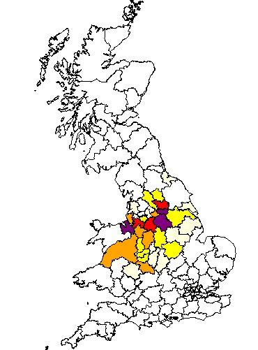

So far we have traced our Wainwright line back to William Wainwright who married Jane Barber at St Martins in Worcester in December 1813. William was a bricklayer.
The couple moved from Worcester to Gloucester and later to Nottingham, where they connect to the broader Noble family story.
Return to Home